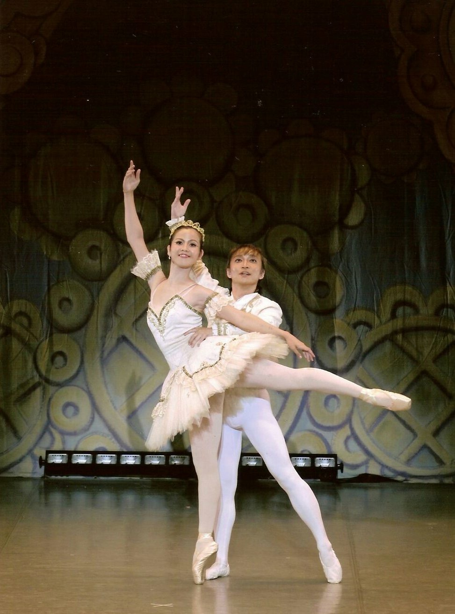

INDEPENDENT RESEARCHER · DANCE ARTIST
藤本 寧
Yasushi Fujimoto
法律学と舞踊学の交差領域を探究する
独立研究者・修士（法学）・舞踊家
著作権法、民法、舞踊学、身体表現論を中心に、振付と実演、身体表現の構造、舞踊の著作物の保護について研究しています。

PROFILE
プロフィール
東洋大学法学部法律学科卒業。中央大学大学院法学研究科国際企業関係法専攻博士前期課程修了（2005年）。修士（法学）。埼玉工業大学非常勤講師として民法を担当した経験を持つ。
1988年から1998年まで松山バレエ団に所属。その後、フリーの舞踊家として舞台活動を続け、バレエ指導にも携わる。法律学と舞踊学を横断する研究に取り組んでいる。
RESEARCH INTERESTS
研究領域
著作権法・知的財産法民法舞踊学身体表現論
舞踊の著作物と法的保護
振付の創作的表現、既存のステップの選択・配列、振付と実演の関係を検討する。
人格権とパブリシティ権
声などの人格的利益の保護と、民法上の不法行為責任を検討する。
現在の研究課題
「『踊ってみた』にみる舞踊の著作権に関する一考察」、クラシック・バレエの身体表現の構造、声の無断利用に対する民法上の保護など。
※ 上記は執筆・検討中の研究課題であり、刊行済み業績ではありません。
PUBLICATIONS & RECOGNITION
研究業績
2005年 第5回著作権・著作隣接権論文募集 佳作受賞「著作権法第10条1項3号の『舞踊』の意味についての考察」著作権情報センター資料検索
「『舞踊の著作物』の立法経緯とバレエの創作性について」
「振りの著作物についての一考察」公開PDF
「日本とアメリカの判例に見る振付家の権利と職務著作についての一考察」
「実演家の権利としての著作隣接権」
※ その他の研究業績（「新規学卒者の就職に関する将来の展望」等）は書誌情報を確認後に追記します。
DANCE PRACTICE & TEACHING
舞踊活動・教育歴
松山バレエ団（1988–1998年）に所属。以後、フリーの舞踊家として活動。バレエの実演・指導経験を基盤に、身体表現の構造を研究に結びつけている。
埼玉工業大学非常勤講師（2010–2012年、民法総則・物権法）。バレエ指導（2016年～）。
CONTACT
お問い合わせ
研究・執筆・講演などに関するお問い合わせ：yasushi.fujimoto@gmail.com
研究者プロフィールサイトへのリンクは、各アカウントの公開URLを確認してから追加します。